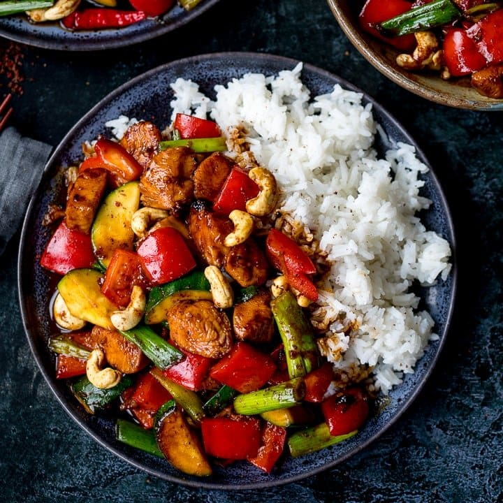

Kung Pao Chicken

Kung pao chicken is a popular Chinese restaurant dish of stir-fried chicken,
peanuts and vegetables. It’s traditionally made with specialty ingredients,
like Sichuan peppercorns, Chinese black vinegar, Chinese rice wine, and whole dried
red chilies.
This Americanized version replaces those hard-to-find-ingredients with staples from
your neighborhood supermarket. It has all the same spicy, sweet, and sour appeal
of traditional kung pao chicken, and it makes a really nice weeknight dinner with
a side of rice.
Ingredients
For the marinade:
- 11/2 tablespoons soy sauce
- 1 tablespoon dry sherry
- 2 teaspoons corn starch
- 11/2lb chicken tenderloins,cut into 1-in pieces
For the sauce:
- 1 tablespoon balsamic vinegar
- 2 table spoon soy sauce
- 1 tablespoon hoirin sauce
- 1 tablespoon Arian/toasted sesame oil
- 11/2 tablespoons sugar
- 1 tablespoon corn starch
- 1/2 teaspoon crushed red pepper flakes
- 1/4 teaspoon
- 1/3 cup water
For the stir-fried:
- 21/2 tablespoons vegetable oil
- 1 large red bell pepper
- 1/4 teaspoon salt
- 3 cloves garlic
- 5 scallions, white and green parts
- 1/3 cup whole roasted unsalted peanuts or cashews
Preparation
- Marinate the chicken: In a medium bowl, whisk together the soy sauce, dry sherry, and cornstarch until the
cornstarch is dissolved. Add the chicken and toss to coat. Let stand at room temperature for 15 minutes,
stirring occasionally.
- Prepare the sauce: In another medium bowl, whisk together all of the sauce ingredients until the cornstarch
is dissolved (it can stick to the bottom of the bowl so be sure to scrape it up).
- Heat a large nonstick skillet over high heat until very hot. Add 1 tablespoon of the oil and swirl to coat.
Add the bell pepper, celery, and salt and cook, stirring frequently, until slightly softened and starting to
brown, about 5 minutes. Transfer the vegetables to a large bowl and set aside.
- Add an additional ½ tablespoon of oil to the pan and set over high heat. Add half of the chicken (it's
important not to crowd the pan) and brown on one side, about 1½ minutes. Turn the chicken pieces and
continue cooking for about 1½ minutes more, or until the chicken is just cooked through.
- Transfer the chicken to the bowl with the peppers and celery. Add another ½ tablespoon of oil to the pan.
Add the remaining chicken and cook until golden on one side, about 1½ minutes.
- Turn the chicken pieces over and cook for 1 minute. Add ½ tablespoon more oil to the pan, along with the
garlic and scallions, and cook, stirring with the chicken, for about 30 seconds more.
- Add the reserved vegetables and reserved chicken to the pan, along with the sauce.
- Reduce the heat to low and cook until the chicken and vegetables are warmed through and the sauce is
thickened, about 30 seconds.
- Stir in the nuts. Taste and adjust seasoning, if necessary, and serve.
Go back to Principal Menu